Re-caption pilot: 100 shapes
Haiku rewrote each shape's caption as one sentence about its shape in our grey cube world, or UNCLEAR when it would not read as its caption. Then Haiku looked at the render and picked its own new caption (KEEP), another category's caption, or neither (DROP). Check the verdicts by number.
| source | shapes | UNCLEAR | kept | neither | wrong pick |
|---|---|---|---|---|---|
| text2shape | 50 | 0 | 41 | 9 | 0 |
| objaverse_cap3d | 50 | 25 | 14 | 8 | 3 |
Known weakness: the control is another category, so a caption naming parts the render lacks can still win (#3, a solid box kept as a table with a shelf).
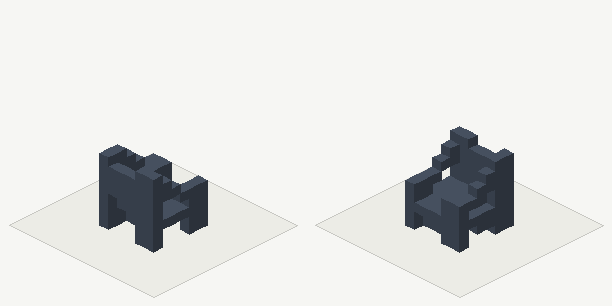
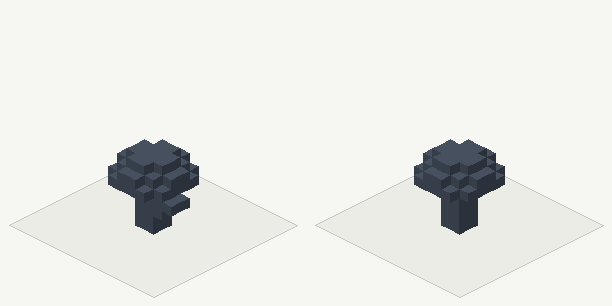
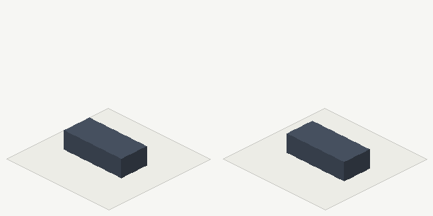
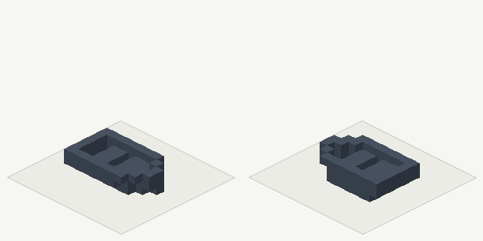
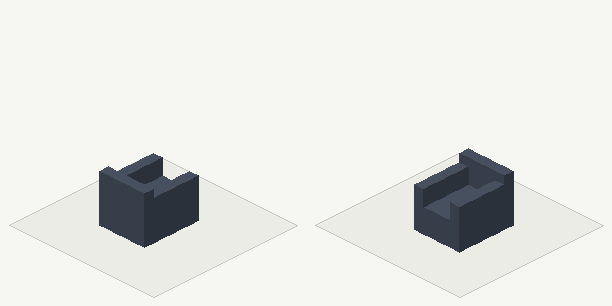
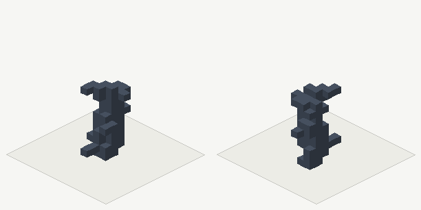
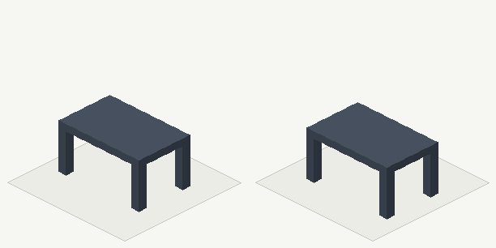
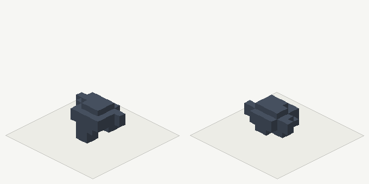
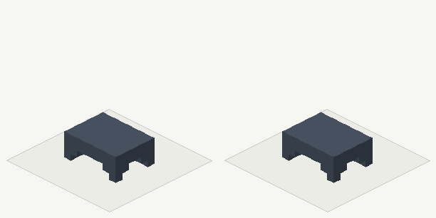
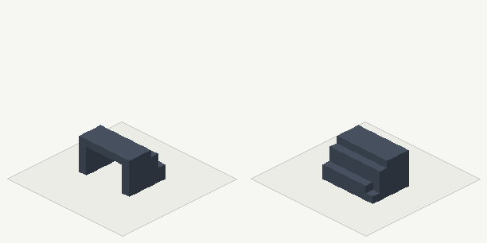
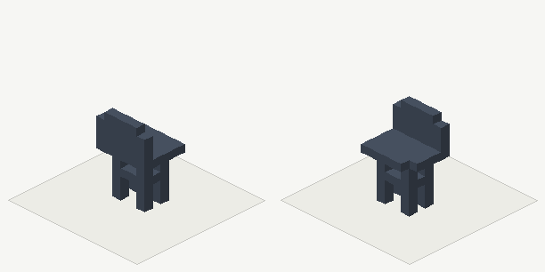
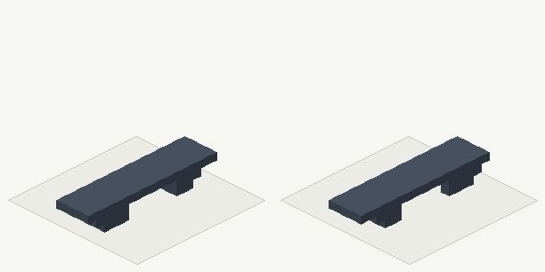
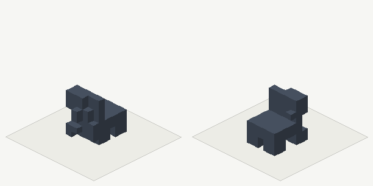
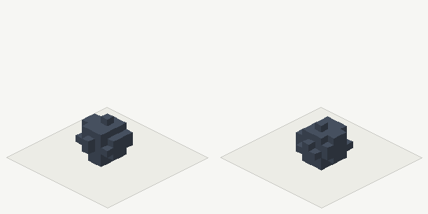
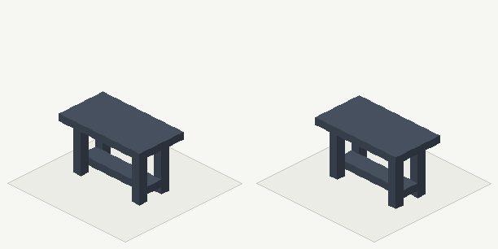
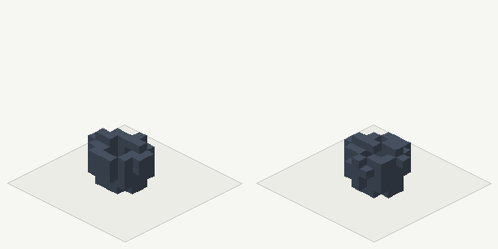
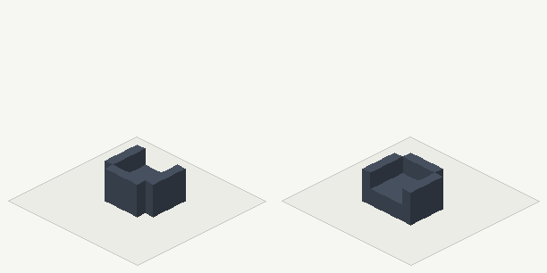
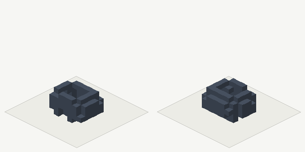
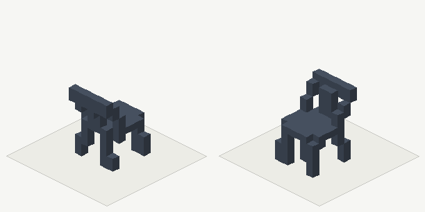
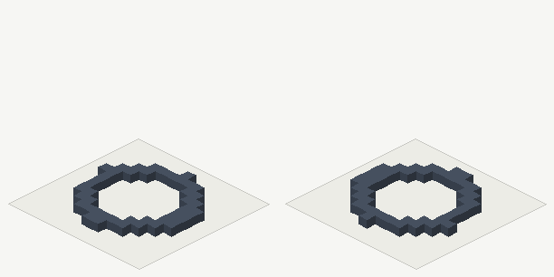
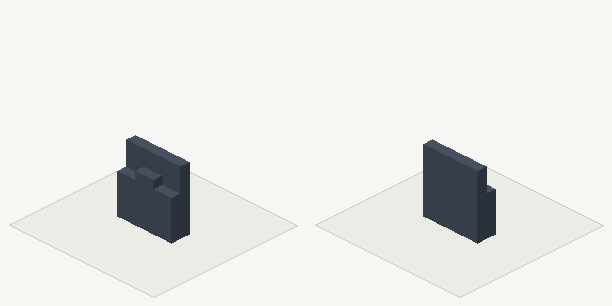
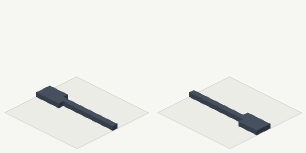
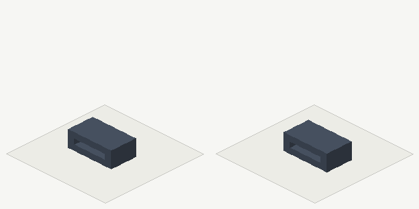
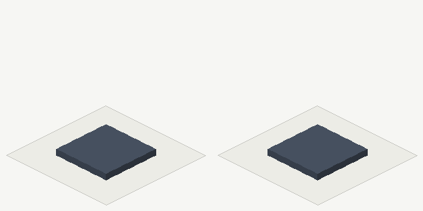
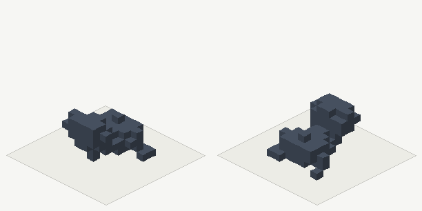
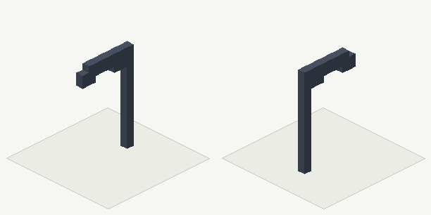
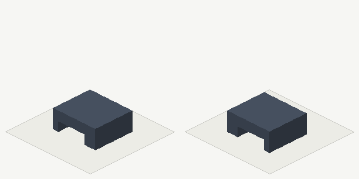
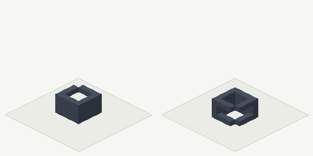
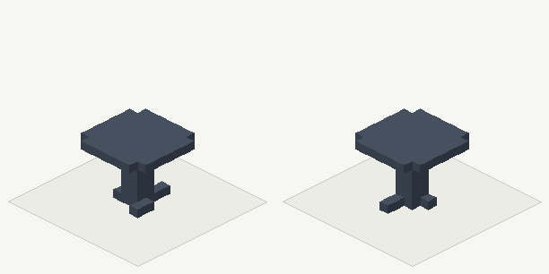
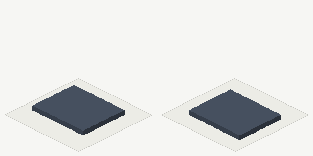
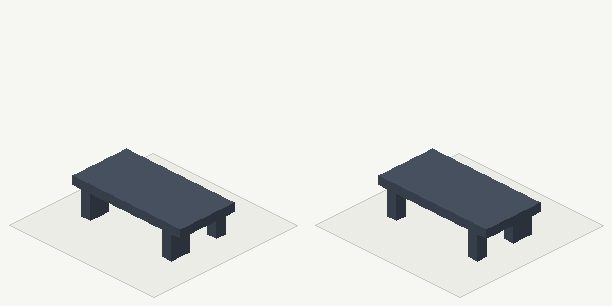
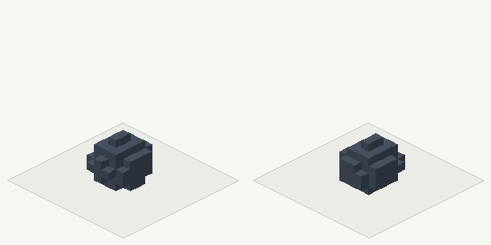
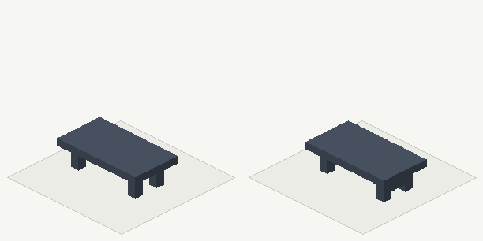
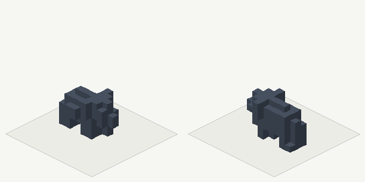
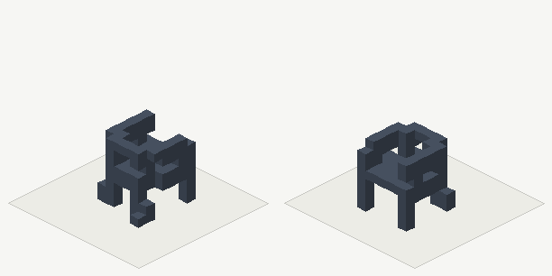
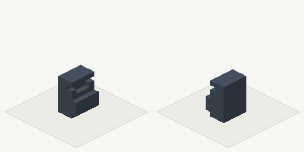
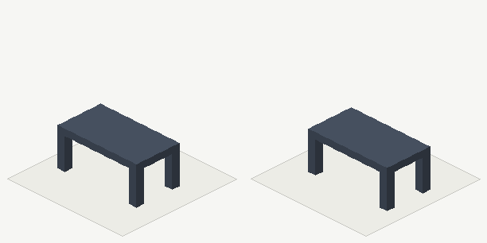
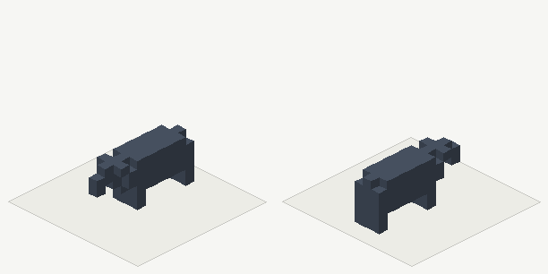
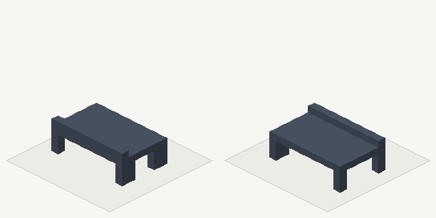
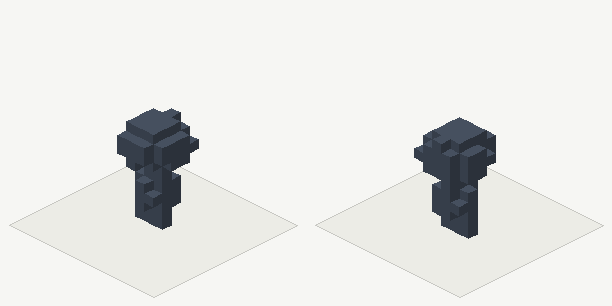
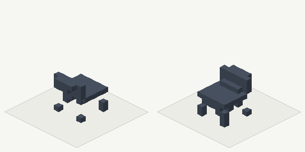
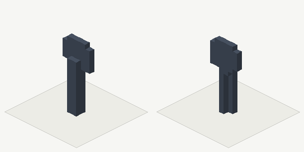
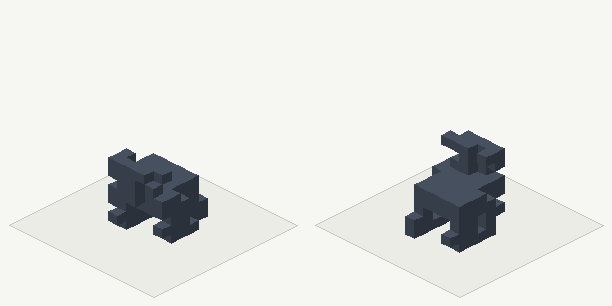
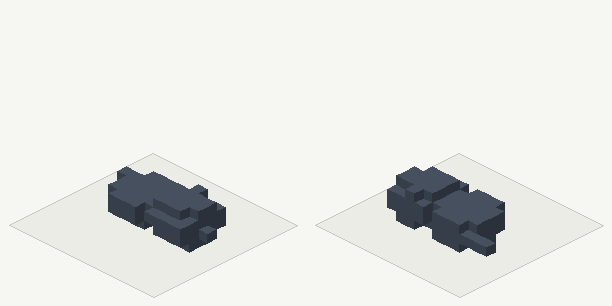
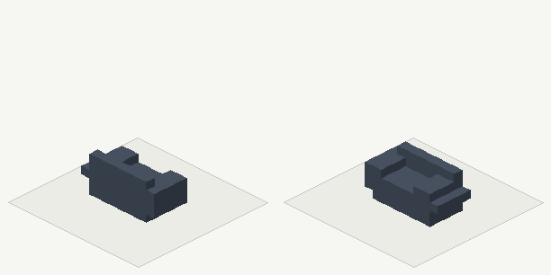
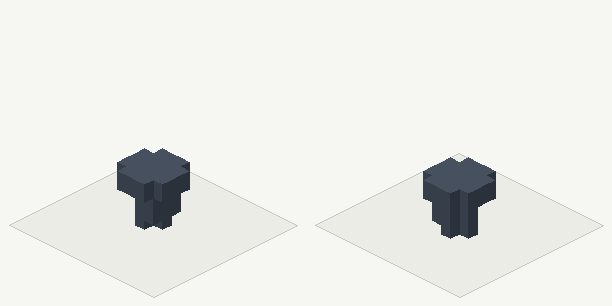
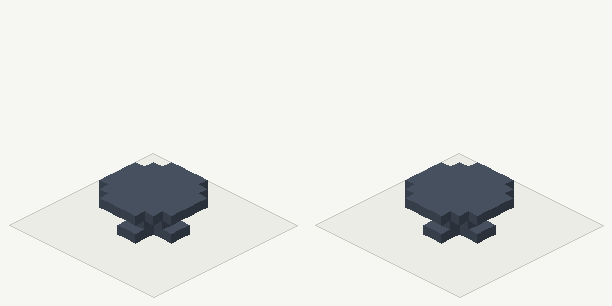
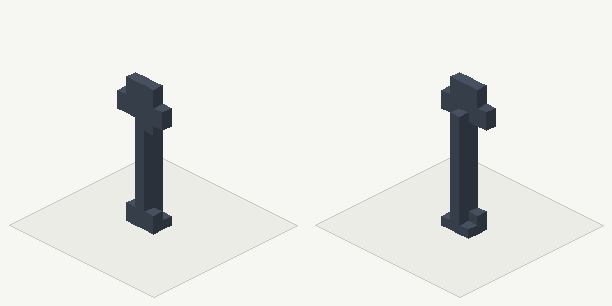
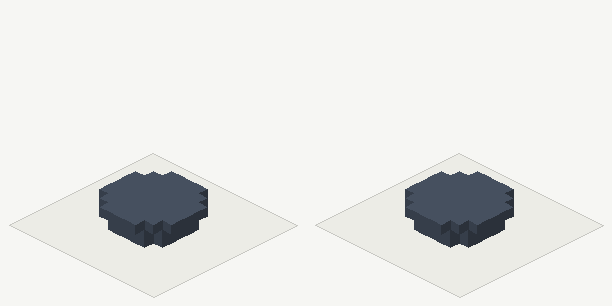
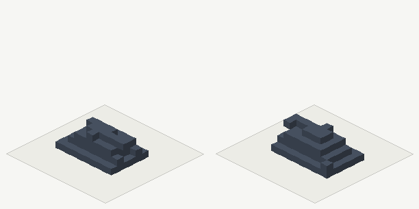